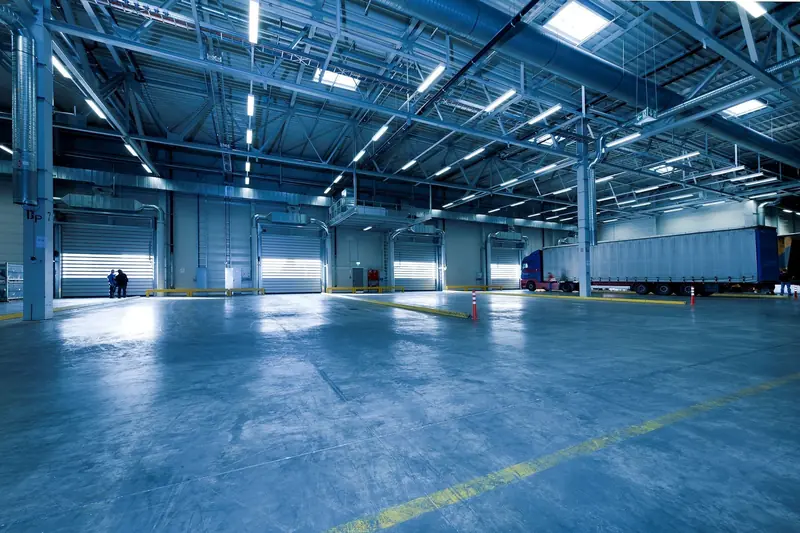

Piso epóxi autonivelante, liso e sem juntas
Para ambientes que exigem limpeza e têm tráfego leve a médio.
2 a 3 mm

O problema
Toda junta é uma fresta. Num piso de placas ou num contrapiso trincado, a junta recolhe resíduo, retém umidade e resiste à limpeza, porque a escova não alcança o fundo dela. O mesmo vale para o encontro entre piso e parede, onde o canto vivo acumula o que a lavagem empurra.
Em ambiente que passa por auditoria de higiene, esse é um ponto examinado de perto: o resíduo nas juntas costuma ser o apontamento que aparece antes de qualquer outro.
O que o sistema faz
Sistema de 2 a 3 mm com acabamento liso e sem juntas. Indicado para ambientes que exigem limpeza e tráfego leve a médio.
O autonivelante é aplicado como uma camada contínua: não há placa, não há rejunte e não há fresta onde o resíduo se aloje. A superfície lisa e fechada é limpa com a própria passagem da água.
O encontro entre piso e parede pode receber rodapé em meia-cana, que substitui o canto vivo por uma curva. A curva não acumula, e a limpeza percorre piso e rodapé num movimento só.
A prova
Aprovado na auditoria seguinte, sem apontamento referente ao piso
Indústria farmacêutica em Hortolândia/SP
O cliente havia sido reprovado em auditoria por acúmulo de resíduo nas juntas do piso. Executado autonivelante sem juntas em 1.800 m² com rodapé em meia-cana. O cliente foi aprovado na auditoria seguinte sem apontamento referente ao piso.
- Área
- 1.800 m²
- Acabamento
- sem juntas
- Rodapé
- em meia-cana
- Antes
- reprovado por resíduo nas juntas
- Depois
- aprovado, sem apontamento no piso
Veja também
- Poliuretano cimentício Para áreas onde o piso é lavado com água quente e sofre variação brusca de temperatura.
- Recuperação de pisos Para pisos que ainda servem, mas perderam junta, canto ou trecho de superfície.
- Resíduo acumulado nas juntas: o ponto que reprova o piso em auditoria Junta e canto vivo são frestas. Numa auditoria de higiene, é por elas que o exame começa.